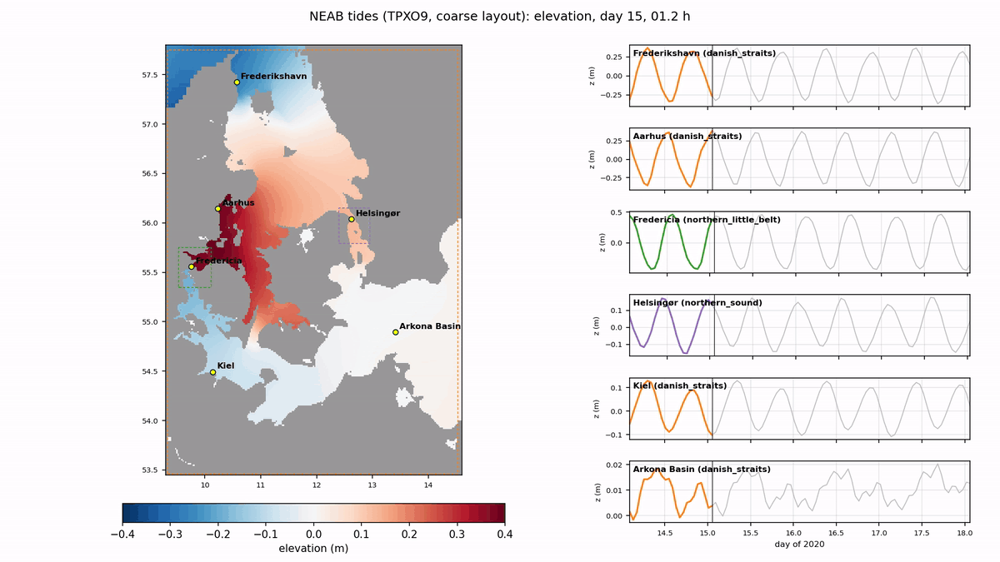

Under development · updated 2 November 2026
NEAB: North-East Atlantic–Baltic
Five pyGETM models from the NE Atlantic at 6.5 km down to the Danish straits at 0.25 km, coupled by two-way nesting. Each level has its own grid, time step and cores; all of them compute at the same time. A coarse version at half the resolution is used for all exploratory work.
- levels
- 5
- refinement
- 3 × 3
- 31 days, coarse
- 21 min
- tide gauges
- 685
6.5 km to 0.25 km
time ratio 1 or 3
on 64 cores
GESLA comparison
Five levels, from the Atlantic to the Danish straits
Each child is drawn as its active region (solid line); its window is dashed. Magenta: interface cells. The Danish straits model was moved to 9.33°E / 53.46°N on 31 October so that it exchanges only across the Kattegat (north) and at Arkona (east).
| Level | Area | Interfaces | Grid | Resolution | Time ratio | dt |
|---|---|---|---|---|---|---|
| neab_root | 20°W–31°E, 42–66.5°N | open boundaries (TPXO9, Flather) | 510 × 392 | 6.2 × 6.9 km | – | 8.8 s |
| north_sea_baltic | North Sea, Channel, Celtic and Irish Sea, Baltic | 8°W, north of Scotland, Shetland–Norway | 1155 × 840 | 2.0 × 2.3 km | 1 | 8.8 s |
| danish_straits | Kattegat, Belts, Sound, Arkona, German coast | Kattegat 57.69°N, Arkona 14.5°E | 465 × 618 | 0.70 × 0.77 km | 1 | 8.8 s |
| northern_little_belt | Fredericia–Middelfart narrows | across the Belt | 153 × 174 | 0.23 × 0.26 km | 3 | 2.9 s |
| northern_sound | Helsingør–Helsingborg | across the Sound | 150 × 153 | 0.23 × 0.26 km | 3 | 2.9 s |
dt = 0.8 × pyGETM's Domain.cfl_check. Refining by 3 keeps the time step where the water is 9 times shallower: true for the shelf seas under the deep Atlantic, not for the narrow straits, which take 3 steps per parent step.
A seed point and straight-line barriers per level. The Norwegian Sea and the Rockall Trough stay with the root, the Skagerrak with north_sea_baltic.
The Celtic Sea is part of north_sea_baltic (Irish Sea and Channel connected), which cut the Irish Sea M2 errors by about 40 %.
Bathymetry, as the NSe production setup
- Raw: ocean-prep
bathymetry-regrid, conservative regridding of GEBCO / EMODnet, once per level. - Processing: thalweg corridors, local minimum depths, basins, rx0 ≤ 0.2.
- Fixes in a second pass, the same groups as NSe (Irish Sea, Great Belt, Little Belt, Øresund). The Little Belt is closed in the raw grids and opened by its thalweg group.
Ratio 3 under north_sea_baltic; the interface outside the barrier islands at about 18 m. Needs drying and flooding.
Cores, tides and timing
Cores per model
7 / 39 / 14 / 2 / 2 cores. Dark blue: computed; light blue: children's holes; grey dotted: removed subdomains.
busy 90–100 % in every model.
Tides (coarse layout, M2)
Sync (all models step at the same time, the child's ring extrapolated from the parent's last two syncs) equals the sequential order to below 1 mm and is 17 % faster.
Amplitude and phase, each model over the cells it computes.
Station pairs on both sides of each interface agree: no jumps.
Processed bathymetry, z0 = 0.015 m. A sanity check, not a calibration.
Tides in motion
Hourly elevation over two days (days 15–17 of the 31-day coarse run, all TPXO9 constituents). Every model is drawn over the cells it computes, the finest on top; dashed: the children's windows. On the right, the elevation at six stations from the finest model computing each of them, the coloured line growing with the animation.

The tide enters from the Atlantic, runs around the British Isles into the North Sea and fades towards the Baltic.

The amphidromic systems of the North Sea; the Channel and the Irish Sea are part of the same model.

The Kattegat tide drops through the Belts and the Sound; the two straits models (dashed boxes) at 0.5 km.
The new Danish straits window on 64 cores
The same 31-day run (all constituents, z0 = 0.015 m) with the Danish straits moved to 9.33°E / 53.46°N, one MPMD component per model, pinned to cores on a 64-core server: 31 minutes, against 100 minutes on 18 cores before. Against 685 GESLA gauges the result is unchanged, as expected: the west interfaces it removes were a few cells in small fjords.
| Model | Gauges | M2 vector rms before → after | S2 | K1 |
|---|---|---|---|---|
| neab_root | 124 | 0.251 → 0.251 m | 0.100 → 0.100 m | 0.055 → 0.055 m |
| north_sea_baltic | 463 | 0.348 → 0.348 m | 0.143 → 0.143 m | 0.053 → 0.053 m |
| danish_straits | 89 | 0.077 → 0.076 m | 0.021 → 0.021 m | 0.013 → 0.013 m |
| northern_little_belt | 1 | 0.221 → 0.221 m | 0.068 → 0.068 m | 0.005 → 0.005 m |
| northern_sound | 8 | 0.067 → 0.066 m | 0.019 → 0.019 m | 0.010 → 0.010 m |
Since then the order of the exchanges in a sync has changed: one halo update per sync, the children's data sent up first (bit-identical results). The same 31-day run now takes 21 minutes on 64 cores. Timers in the halo updates showed that most of what had looked like nesting work was waiting for the other models; the nesting's own work (restriction, flux matching, ring values) is 6–14 % of the time.
The tide east of the Skagerrak amphidrome
Over most of the North Sea NEAB's M2 is within 10–15 % of TPXO9. From the Danish North Sea coast into the Skagerrak and the Kattegat it is about twice too large (Skagen 0.29 m against 0.14 m observed in the control run). The search for the cause — shallow water and the Wadden Sea flats, bottom friction, the depth datum (LAT against MSL), the depth source — is an open issue with its own record.
Issues found and solved along the way: NEAB's tide east of the Skagerrak amphidrome is twice too large, TPXO9 at the coast: wet nodes without constants.
Tidal maps for model comparisons
As a common reference for comparing models, the twelve TPXO9-atlas constituents (M2, S2, N2, K2, K1, O1, P1,
Q1, M4, MS4, MN4, 2N2) are cut to the AMM7 area, extended east and north to hold the whole Baltic: 20°W–31°E,
40–66°N, on TPXO9-atlas's own 1/30° grid. The file tpxo9_atlas_amm7_baltic.nc (15 MB, in
TPXO9/maps beside the TPXO9 data) holds, for every constituent:
- the amplitude (m) and the Greenwich phase lag (°): the cotidal lines are the contours of the phase;
- the complex amplitude (re, im), for interpolation onto a model grid without the jump at 0/360°;
- TPXO9's depth and water mask.
These are harmonic constants without nodal corrections. Only water connected to the Atlantic is kept. Inside the
box the Mediterranean is cut off (Gibraltar lies south of 40°N), and TPXO9-atlas has amplitudes of metres there
that are not real, in the Adriatic. TPXO9 is fitted to altimetry and tide gauges, so it is a good reference
offshore and on the open shelf. In the Wadden Sea, the inner Danish waters and the Baltic, with tides of a few
centimetres, it is a guide, to be used together with gauges. In the Baltic its local patches show edges against its
coarser global solution (Gulf of Finland, Gulf of Riga, 24°E in the Bothnian Bay). The file and the figures come
from NEAB/scripts/tide_reference.py.
M2 amplitude and cotidal lines every 30° (Greenwich phase) over the whole box; red, dashed: the AMM7 domain.
Left: the North Sea and its three amphidromes. Right: the Baltic with the colour scale to 5 cm.
Amplitude and cotidal lines every 30° for each constituent, each with its own colour scale.
Tidal series
The same TPXO9 constituents give time series at any point, predicted as pyGETM does at its open boundaries (all
twelve constituents, nodal corrections), with model runs on top (NEAB/scripts/tide_series.py). January
2020 in the Bristol Channel (Hinkley Point) and at Saint-Malo, two of the largest tides in the area, both with a
range of over 11 m at springs, against NEAB's control run and the run with its depths from LAT to MSL. The series are taken at the nearest TPXO9 node with
tidal constants: at Hinkley Point that is 11 km out in the channel (M2 3.72 m against 3.92 m at the gauge), at
Saint-Malo 3 km off (3.68 m against 3.67 m). NEAB's spring tides in the Bristol Channel are about 0.5 m too
small, and its neaps at Saint-Malo a little too large. Part of the rms difference comes from NEAB's hourly
output, which cuts the peaks. The deeper shelf brings M2 at the Hinkley Point gauge from 3.58 m to 3.73 m (observed
3.89 m) but hardly changes the rms differences of the series (0.63 m and 0.38 m).
TPXO9 (black), NEAB's control run and the run with depths from LAT to MSL (north_sea_baltic, 31 days, z0 0.015 m), shifted to zero mean; the rms difference is in the legend.
In the central Baltic the diurnal K1 and O1 are as large as M2: medians of 0.6–0.7 cm.
Boundaries for other setups
A NEAB run can write hourly elevation, transports and velocities of its levels. nesting-boundaries
samples them at another model's open-boundary points, taking at every point the finest NEAB level with water
there. The result is a file in the layout of the OceanICU NSe setup, which pyGETM reads on its own grid
without interpolation. The first user is DKm, the Danish waters
with their fjords: its root and its Belt Sea level take their open boundaries from NEAB, TPXO9 or CMEMS.
Through NEAB, DKm inherits the Kattegat error described above. With TPXO9 at its boundaries, DKm has the
Kattegat tide right.